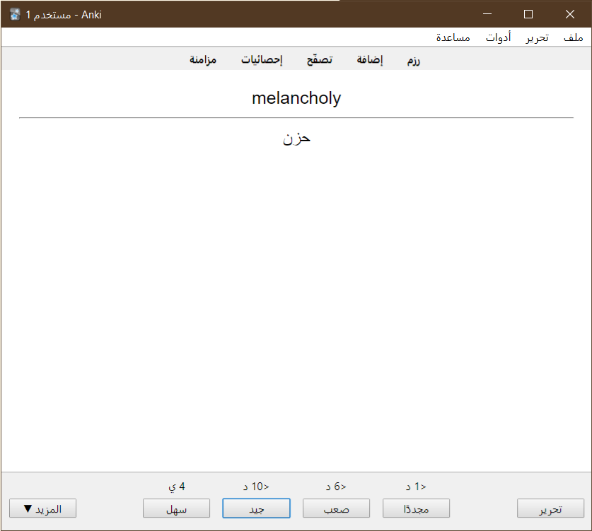

تعريف ببرنامج Anki لتذكر أي معلومة
مقدمة
كلنا تقريبا يشكو من ضعف ذاكرته وعدم قدرته على تذكر معلومات مهمة له. مع أن النسيان قد يكون أمرا طبيعيا وحتميا في النهاية، إلا أن هناك طرقا يمكن للجميع استغلالها لتحسين تذكره. سأتكلم هنا عن تطبيق عملي لطرق تعلم فعالة يتمثل في برنامج يدعى Anki (أنكي). يمكن التفكير ببرنامج أنكي كدفتر لتدوين الملحوظات، لكن عكس دفاتر الملحوظات التي تسوّدها وتنسى أمرها كليا بعد فترة وجيزة، أنكي مخصص لمساعدتك على مراجعة ما تتعلمه بطريقة تسهل تذكر المعلومات لأطول فترة ممكنة. يكون استخدامك للبرنامج عموما عبارة عن إدخال للمعلومات التي تريد تذكرها (غالبا على شكل سؤال-جواب) ثم مراجعة هذه المعلومات من خلال واجهة البرنامج بشكل متكرر. إذن، ما الجديد هنا والمختلف عن أي دفتر ملحوظات أو برنامج تدوين مذكرات مثلا؟ الفرق الأكبر هنا أن البرنامج نفسه هو من يحدد متى ستراجع ما تتعلمه. يحدد البرنامج الوقت المناسب لمراجعة كل معلومة بناء على مدى تذكرك لها. لكن كيف يعرف البرنامج مدى تذكرك؟ ببساطة تخبره أنت بذلك من خلال عدة أزرار مخصصة لتقيم أداءك بنفسك. الضغط على أي من هذه الأزرار سيجعل البرنامج يجدول المعلومة لتراجعها في أوقات مستقبلية مختلفة.
استعراض أنكي
لتوضيح استخدام شائع جدا لبرامج مثل أنكي، لنقل إنك تريد تعلم بعض المفردات الإنجليزية. فمثلا، تريد أن يعرض لك البرنامج كلمة إنجليزية ويطلب منك تذكر مقابلها العربي. لنأخذ مثالا مرفقا بالصور يوضح كيف يمكننا تحقيق هذا في أنكي.
سأوضح هنا نسخة الكمبيوتر من البرنامج (تتوفر نسخ للأندرويد والأيفون أيضا تعمل بشكل مشابه). أنصح بتنزيل أنكي من خلال https://apps.ankiweb.net/#download قبل المتابعة بالقراءة وتطبيق الخطوات معي.
بعد تنزيل البرنامج وفتحه، ستظهر لك نافذة كالتالي:
اضغط على زر إضافة في الأعلى لكي تظهر لك نافذة إدخال المعلومات التالية:
هذه هي نافذة إضافة البطاقات. «بطاقة» هنا تشير إلى كل معلومة مستقلة تضيفها إلى البرنامج وتريد تعلمها. سترى أن هناك حقلين معنونين بعناوين أمام وخلف. تحدد هذه الحقول المعلومات التي ستظهر في البطاقة، وكما تدل اسماؤها، فإن هذه الحقول تحدد ما سيظهر في أمام البطاقة وخلفها. تسمية بطاقة أتت من البطاقات الورقية المستخدمة للغرض نفسه، التذكر، حيث تحمل سؤالا في جانب، وجواب هذا السؤال في الجانب الآخر. تدعى هذه البطاقات المستخدمة للتذكر -سواء الورقية أم الإلكترونية- بطاقات الاستذكار (flashcards).
حسنا، ماذا سندخل في حقلي أمام وخلف؟ تذكر أننا نريد تعلم مفردات إنجليزية ومقابل كل كلمة في العربية، لذلك سندخل كلمة إنجليزية في حقل أمام، ومقابلها العربي في حقل خلف. لندخل مثلا كلمة melancholy.
بعد أن تعبئ الحقول، اضغط على زر إضافة. ستبقى نافذة الإضافة مفتوحة إذا كنت تريد إضافة بطاقات أخرى. أضف كلمة أخرى من ذهنك ثم أغلق النافذة.
في النافذة الرئيسية، ستجد أن هناك قائمة بالـرزم الموجودة لدينا. الرزم هي ببساطة أوعية تخزن فيها بطاقاتك بشكل منظم حسب الموضوع مثلا. لدينا هنا فقط رزمة باسم «افتراضية». ستلاحظ أعلى قائمة الرزم كلمات مثل جديدة ومستحقة، وعدد 2 بالأزرق تحت عنوان «جديدة».
لننقر على «افتراضية» يظهر لنا التالي:
لننقر على «ادرس الآن» لنرى ما سيحصل.

ظهر لنا الجانب الأمامي من البطاقة التي أضفناها منذ قليل. هنا مهمتنا هي بالطبع محاولة تذكر مقابل الكلمة في العربية. بعد أن نعصر أمخاخنا لبعض الوقت ونتذكر الكلمة (أو نستسلم)، سنجد زر «إظهار الجواب» في الأسفل ونضغط عليه.

ظهر لدينا الجواب (مفاجأة!). سنلاحظ أربع أزرار في الأسفل عليها كلمات «مجددًا»، «صعب»، «جيد»، «سهل»؛ ورموز غريبة فوق هذه الأزرار مثل “<1 د”، “<6 د”، “<10 د”، “<4 ي”. يمكن القول بأن الضغط على هذه الأزرار هو أهم فعل تجريه في البرنامج. هذه الأزرار مخصصة لكي تقيم مدى تذكرك للإجابة الصحيحة: «سهل» يعني أنك وجدت السؤال سهلا طبعا، و«جيد» يعني أن تذكرك للجواب كان مرضيا لكن لا يمكنك أن تقول إنه سهل، و«صعب» تعني أنك تذكرت الجواب بصعوبة، بينما «مجددًا» تعني أنك فشلت بتذكر الجواب. بخصوص الرموز فوق كل زر، فهي تشير إلى الوقت الذي يجب أن تراجع فيه البطاقة مجددا لتعزز من رسوخها في ذاكرتك (البرنامج «يخفي» البطاقات ويظهرها في الشاشة الرئيسية حسب هذه الأوقات). فـ “4 ي” مثلا تعني أن عليك مراجعة البطاقة مجددا بعد أربع أيام إذا وجدت البطاقة سهلة وضغطت على زر «سهل»، بينما تعني “<10 د” عند الضغط على زر «جيد» أن عليك مراجعة البطاقة بعد عشر دقائق وسيظهر البرنامج البطاقة بعد عشر دقائق أو يزيد بقليل. لاحظ أن الأوقات تزداد حسب الصعوبة (سنتكلم عن سبب هذا لاحقا).
لنقل إننا وجدنا السؤال سهلا جدا وأجبنا عنه فوريا. عندها سنضغط بطبيعة الحال على زر «سهل».
ستظهر لنا البطاقة الثانية التي أضفناها:
لنقل إننا وجدنا هذه الكلمة سهلة أيضا لذلك أجبنا عنها فورا وضغطنا على زر «سهل»، لتظهر لنا الشاشة التالية:
انتهينا من دراسة هذه الرزمة المكونة من بطاقتين. إذا عدنا إلى الشاشة الرئيسية بالضغط على زر «رزم» في الأعلى فسنرى التالي:
لم يعد لدينا شيء لندرسه اليوم. لنأخذ استراحة 4 أيام ونعد للبرنامج. أنصح بالانتظار لكامل المدة إذا كنت تريد عيش التجربة كاملة، لكن إذا كنت عديم الصبر مثلي فيمكنك متابعة القراءة بدون تطبيق ما تقرؤه، أو تستطيع استخدام الخدعة التي استخدمتها 1.
(بعد 4 أيام)
عدنا بعد 4 أيام وفتحنا البرنامج ووجدنا التالي في الشاشة الرئيسية:
لاحظ أن هناك عدد “2” بالأخضر تحت عنوان «مستحقة». يشير هذا العدد كما تكون قد توقعت إلى عدد البطاقات التي حان وقت مراجعتها اليوم.
سندخل إلى الرزمة الافتراضية الآن ونبدأ الدراسة كما فعلنا سابقا. سنقابل بطاقة كلمة melancholy التي درسنا منذ أيام، لنضغط على إظهار الجواب لكي نرى التالي:
أول شيء يجب أن يلفت الانتباه هو تغير الأوقات الظاهرة فوق أزرار الإجابة. ما نوع هذا التغيير؟ لقد ازدادت أوقات كل زر، فمثلا أصبح وقت جيد 12 يوما بدلا من 10 دقائق، وأصبح وقت زر سهل 16 يوما بدلا من 4 أيام. لاحظنا سابقا أن الأوقات تزداد حسب الصعوبة، لكن ما سبب هذا؟ هنا نأتي لأهم مبدأ يقوم عليه برنامج أنكي، وهو مبدأ المباعدة بين المراجعات، أو التكرار المتباعد. يقوم التكرار المتباعد على فكرة أن ذاكرتنا حول معلومة ما تقوى وتترسخ مع كل مراجعة وتتلاشى عندما لا نراجعها. معدل تلاشي أو اضمحلال الذاكرة يخف بعد كل مراجعة ناجحة، لذلك فقد يأتي وقت نراجع فيه معلومة ما ثم لا نفكر فيها أبدا إلا بعد سنة لكن نجد أن استذكارنا لها ما زال جيدا، وهذا ما يفسر تباعد فترات المراجعة في أنكي وتقاربها حسب الصعوبة: مهمة أنكي هي جدولة المراجعات لك بحيث لا تحتاج إلى التفكير بما ستراجعه كل يوم وإنما تعتمد على قرار البرنامج حول ما أنت على وشك نسيانك وعليك مراجعته، وفي هذا توفير كبير للوقت مقارنة بطريقة الدراسة التقليدية (المعتمدة عموما على الدراسة المكثفة على جلسة واحدة).
فعالية التكرار المتباعد مدّعمة بأكثر من قرن من الدراسات العلمية في مجال الذاكرة2.
يمكن تمثيل فكرة تلاشي الذكريات مع الوقت بما يسمى بمنحنى النسيان، أو منحنى إبنجهاوس، نسبة إلى مكتشفه هيرمان إبنجهاوس.
لنكمل رحلتنا مع أنكي، ولنقل إننا ما زلنا نتذكر كلمة melancholy بشكل جيد، لذلك فسنضغط على زر «جيد» لكي يصبح وقت المراجعة القادمة بعد 12 يوما.
نأتي الآن للبطاقة الثانية، بطاقة كلمة catastrophic (أو أي كلمة أخرى أضفتها بنفسك).
سنلاحظ أن الأوقات فوق كل زر تقييم هي نفسها التي رأيناها في بطاقة melancholy، لأننا قيمنا كلا البطاقتين بالطريقة نفسها قبل أيام. لنقل إننا هذه المرة نسينا معنى catastrophic تماما، لذلك فسنضغط على «مجددًا» لكي تظهر البطاقة مجددا بعد حوال 10 دقائق…
لكن سنتفاجأ بأن البطاقة نفسها ظهرت مجددا فوريا بدون انتظار مدة 10 دقائق! لم هذا؟ تفسير هذا هو ببساطة أن أنكي بشكل افتراضي يتجاهل الفترات الزمنية الأقل من 20 دقيقة ولا ينتظرها، بل يظهر البطاقات فورا. سبب هذا هو لكي لا تحتاج إلى فتح البرنامج مجددا بعد كل مدة قصيرة. يمكن تغيير هذا الخيار لكن لن نشرح هذا في هذه المقالة التعريفية.
ستكون أوقات المراجعة هذه المرة كالتالي:
نلاحظ أن هذه الأوقات متقاربة أكثر وأقصر من أوقات بطاقة melancholy التي نجحنا في تذكرها.
لنضغط على زر جيد وننهي مراجعتنا لليوم.
كانت هذه جولة مرئية قصيرة مع أنكي. لننتقل الآن لبعض التفاصيل المهمة.
المفاهيم الكامنة خلف أنكي
يقوم برنامج أنكي وبرامج مشابهة عموما على فكرتين رئيسيتين:
- التكرار المتباعد (spaced repetition): إنه، كما ذكرنا سابقا، مراجعة المعلومات بشكل متكرر على فترات متباعدة تطول وتقصر حسب أدائنا في كل مراجعة. التكرار المتباعد هو تطبيق لمبدأ يدعى تأثير التباعد والذي يظهر فعالية المباعدة بين جلسات الدراسة. يطبق أنكي مبدأ التكرار المتباعد من خلال توفير أزرار تقييم تستخدمها لتقييم أدائك بنفسك، ثم يأخذ أنكي أجوبتك ويحدد أوقات المراجعة القادمة باستخدامها حسب خوارزمية مخصصة لا تهمنا تفاصيلها هنا.
- الاستحضار النشط (active recall): هو محاولة تذكر المعلومات بشكل نشط ومركز بدلا من المراجعة السلبية (passive review) حيث لا يكون هناك نية وتركيز للتعلم. مثال عن الاستحضار النشط هو أن تختبر نفسك بأن تطرح على نفسك أسئلة وتحاول الإجابة عنها، ومثال عن المراجعة السلبية هو إعادة قراءة المادة مثلا. يقوم الاستحضار الفعال على مبدأ يدعى تأثير الاختبار والذي يشير إلى أن الدراسة التي تتضمن محاولة مراجعة ما تعلمته وتذكره أكثر فعاليا من الطرق السلبية مثل مجرد قراءة كتاب أو مشاهدة فيديو مثلا. يطبق أنكي هذا المبدأ من خلال توظيف فكرة بطاقات الاستذكار، حيث يعرض لك السؤال فقط ويطلب منك استحضار الجواب بشكل نشط قبل إظهار الجواب.
ملحوظات حول استخدام أنكي
حسنا، لقد استعرضنا استخداما بسيطا لأنكي لتعلم مفردات إنجليزية ثم تكلمنا قليلا عن المفاهيم النظرية المستخدمة في أنكي. إذا سحرتك فكرة البرنامج وتحمست لها (كما حصل وما زال يحصل لي)، فلدي بعض الملحوظات التي أظنها مهمة لاستخدام أنكي بشكل فعال:
أنكي هو برنامج مراجعة
البرنامج هو برنامج مراجعة لما تتعلمه بشكل أولى، بمعنى أنه ليس مخصصا لكي تستخدمه وحده للتعلم. استخدام البرنامج الأمثل يكون بعد أن تقرأ كتابا أو تشاهد سلسلة محاضرات مثلا حول الموضوع الذي تريد تعلمه، ثم تضيف بطاقات أنكي لترسيخ ما تعلمته بعد تكوين صورة عامة جيدة حول الموضوع. إضافة بطاقات حول أشياء لا تفهمها لن يؤدي غالبا إلّا إلى أن تعاني بتذكر البطاقات وتمل سريعا وتترك البرنامج. التعلم عملية معقدة لا تكفي فيها أداة واحدة، وأنكي ليس أداة سحرية.
ليس عليك صنع بطاقاتك بنفسك
تتوفر على الإنترنت رزم كثيرة حول مواضيع كثيرة صنعها مستخدمون وشاركوها. يمكنك تحميل رزم جاهزة من هنا مثلا. أجد الرزم الجاهزة مفيدة خصوصا لتعلم المفردات الأجنبية.
لا تعتمد كليا على الرزم الجاهزة
كإضافة واجبة على النقطة السابقة: لا ينصح بالاعتماد حصريا على الرزم الجاهزة. تذكر البطاقات التي تصنعها بنفسك عادة ما يكون أسهل بكثير، وعملية صنع البطاقات نفسها تعد جزءا من التعلم لأنها تدفعك إلى التفكير باستخراج المعلومات وصياغتها على شكل أسئلة.
صياغة الأسئلة بشكل فعال مهمة للغاية
هذا يقودنا إلى التشديد على فكرة أن صياغة الأسئلة بشكل فعال جزء مهم جدا من رحلتك مع أنكي. صياغة الأسئلة بشكل سيء سيؤدي غالبا إلى أنك ستواجه صعوبات كبيرة بالتذكر. هناك “قواعد” ونصائح عديدة لصنع البطاقات يمكننا ذكرها، لكن سأذكر فقط الأساسية منها، وهي:
- تعلم قبل إضافة بطاقات ومراجعتها: كما ذكرنا سابقا، أنكي هو برنامج مراجعة وليس حلا سحريا يجعلك تتذكر كل شيء.
- اجعل بطاقاتك بسيطة: يميل كثير من المبتدئين في استخدام برامج مثل أنكي إلى الوقوع في الخطأ نفسه (كما حصل معي)، هو حشو البطاقات بأكبر قدر ممكن من المعلومات. هذا سيء للذاكرة والتركيز لأن الذاكرة قصيرة الأمد محدودة جدا لدينا. القاعدة الذهبية تقول إن كل بطاقة يجب أن تسأل سؤالا واحدا محددا يمكنك تقييمه ببساطة. إذا وجدت نفسك تتردد كثيرا في تقييم بطاقة، فقد يكون هناك خطب ما في طريقة صياغتك للبطاقة (ربما معلومات كثيرة أو أسئلة غير واضحة). فائدة أخرى للبطاقات البسيطة هي أنها تجعلك تجزئ المعرفة إلى قطع بسيطة يسهل عليك التعامل معها وتقييمها، حيث يكون لكل «قطعة» معلومات بسيطة جدول مراجعة مختلف حسب صعوبتها، وهذا يعزز من فعالية أنكي ويوفر الوقت.
هاتان القاعدتان هما جزء مما يعرف بالقواعد العشرين لصياغة المعرفة، وهي قواعد مشهورة لدى مستخدمي برامج بطاقات الاستذكار والتكرار المتباعد. يمكن قراءة القواعد هنا باللغة الإنجليزية، أو قراءة تلخيص عربي لها هنا.
أنكي مفيد خصوصا للتذكر على المدى الطويل
تقنية التكرار المتباعد تظهر فعاليتها خصوصا على المدى الطويل، لذلك قد تكون أقل فعالية على المدى القصير من طريقة الدراسة المكثفة (cramming) التي ينتهجها كثير من الطلاب قبل الامتحانات. إذا كان لديك امتحان قريب جدا فالدراسة بالطريقة المكثفة الآن قد تعطي نتائج أفضل، لكن إذا كنت تهتم بالتعلم الحقيقي على مدى طويل، فالتكرار المتباعد أكثر فعالية.3
خذ هذه الصورة لبطاقة راجعتها اليوم (2021/12/08) وأضفتها في أواخر سنة 2018 فيها الفاصل الزمني الخاص بزر «سهل» يتعدى العشر سنوات!
راجعت هذه البطاقة حوالي 5 مرات حتى الآن، كانت المراجعة قبل الأخيرة منذ أكثر من سنتين.
بماذا سيفيدك أنكي؟
استخدام أنكي لتعلم اللغة هو من أشهر استخدامات البرنامج. يرى البرنامج رواجا كبيرا أيضا عند طلاب الكليات الطبية نظرا إلى كم المعلومات التي يحتاجون إلى تعلمها. طبعا يمكنك استخدام أنكي لتعلم أي شيء يحتاج تذكر. شخصيا استخدمه لتعلم مواضيع مختلفة من اللغات إلى الرياضيات والبرمجة والمواد المدرسية كلها والقرآن الكريم ومعلومات عامة مشتتة. كنت دائما أحب التعلم ولدي فضول واسع من قبل أن أعرف أنكي، لكن أنكي أعطاني نظاما جعل التعلم هوية وأسلوب حياة لي.
أنكي مفيد خصوصا للمعلومات التي تريد تذكرها على المدى الطويل. إنه سلاح ثمين بأيدي من لديه فضول معرفي واسع ويريد التعمق في مواضيع كثيرة وبناء أساس علمي راسخ.
مصادر تحميل
سأضع هنا روابط تحميل لمختلف نسخ الأنكي الرسمية أو شبه الرسمية:
- برنامج الكمبيوتر مجاني يمكن تحميله من الرابط التالي: https://apps.ankiweb.net/
- تطبيق الأيفون والأيباد الرسمي يدعى AnkiMobile وهو ليس مجانيا ويكلف حوالي 25 دولارا في وقت كتابة هذه الأسطر: https://apps.apple.com/us/app/ankimobile-flashcards/id373493387
- تطبيق الأندرويد يدعى AnkiDroid وهو مجاني: https://play.google.com/store/apps/details?id=com.ichi2.anki
هناك تطبيقات تعلم عديدة على مختلف المتاجر تحمل اسم Anki أو ما شابه. أغلب هذه التطبيقات غير رسمي ولا علاقة لها بأنكي الذي نتحدث عنه هنا سوى أنها تستغل اسمه.
استخدام أنكي على منصات مختلفة
استعرضنا هنا نسخة الكمبيوتر من أنكي، لكن كما قلنا، يتوفر البرنامج أيضا على الأندرويد والأيفون. استخدام هذه التطبيقات لا يختلف كثير من ناحية مراجعة البطاقات وما إلى ذلك، لكن نسخ الجوال عموما لا توفر كل الميزات المتقدمة التي توفرها نسخة الكمبيوتر. لن تحتاج إلى هذه الميزات إذا كنت ما زلت قد تعرفت على البرنامج على كل حال.
يمكنك نقل بياناتك من بطاقات وبيانات المراجعة بين أجهزتك المختلفة من خلال إنشاء حساب في موقع AnkiWeb، وهو موقع مرافق للنسخ الأخرى يمكن استخدامه للمراجعة أونلاين عند عدم توفر النسخ الأخرى، ويمكن أيضا استخدامه للمزامنة بين الأجهزة المختلفة. انظر هذه الصفحة لتعليمات مفصلة حول إنشاء الحساب والمزامنة.
خاتمة
كانت هذه مقالة تعريفية قصيرة حول أنكي. ما زال هناك طبعا الكثير حول أنكي واستخدامه، لكن سأكتفي بهذا القدر لهذه المقالة وسأضع لك مراجع إذا كنت مهتما بالغوص أكثر في الموضوع، كما أنوي كتابة مزيد من المقالات حول أنكي في المستقبل.
مراجع
- دليل استخدام برنامج أنكي الرسمي (مترجم): يحتوي على معلومات مفصلة لاستخدام البرنامج. اقرأ قسم البدء على الأقل.
- مجتمع أنكي العربي:
- قناة Anki_arabic على يوتيوب
- مجموعات أنكي العربية على تلجرام:
- مجموعة كتاب «الأسماء كلها» على تلجرام: تناقش موضوعات كثيرة متعلقة بالذاكرة والتعلم وفيها نقاش حول أنكي.
- كيف تتذكر أي شيء للأبد -تقريباً-: مقالة ممتعة مع رسوم تفاعلية حول التعلم الفعال.
- تعزيز الذاكرة طويلة الأمد - مايكل نيلسن (مترجم): ترجمة لمقالة من أفضل المقالات حول التعلم الفعال، يسرد فيها الكاتب بتفصيل تجاربه مع أنكي.
- مصادر عربية منوعة:
-
الخدعة هي استخدام برنامج RunAsDate لتغيير التاريخ الذي يراه أنكي. ↩
-
لمراجعة غنية عن الجانب العلمي للتكرار المتباعد، انظر https://www.gwern.net/Spaced-repetition ↩
-
فعالية الدراسة المكثفة على المدى القصير قد تكون من الأسباب التي تجعل كثيرا من الطلاب يفضلونها على التكرار المتباعد، حتى عندما يظهر لهم أفضلة المباعدة للتذكر الطويل. انظر المرجع السابق. ↩